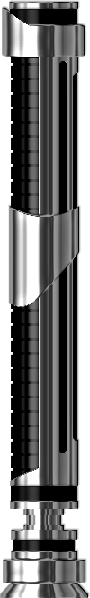

<link href="../polymer/polymer.html" rel="import">


<dom-module id="sable-laser">

    <style>
        @keyframes desenfundo {
            0% {
                height: 0px;
            }
            100% {
                height: 250px;
            }
        }
        
        @-webkit-keyframes desenfundo {
            0% {
                height: 0px;
            }
            100% {
                height: 250px;
            }
        }
        
        #laser {
            width: 20px;
            height: 450px;
            background-color: aqua;
            transform-origin: 50% 0%;
            -webkit-transform-origin: 50% 0%;
            -moz-transform-origin: 50% 0%;
            transform: translate3d(0px, 0, 0px);
            -webkit-transform: translate3d(600px, 0, 0px);
            margin-left: 50%;
            margin-top: 50%;
            position: absolute;
            border-radius: 10px;
            animation-name: desenfundo;
            animation-duration: 0.5s;
            animation-timing-function: ease-in;
            -webkit-animation-name: desenfundo;
            -webkit-animation-duration: 0.5s;
            -webkit-animation-timing-function: ease-in;
        }
        
        .mango {
            margin-top: -160px;
            margin-left: -4px;
            width: 140%;
        }
    </style>

    <template>
        <div id="laser">
            <div> 
                
            </div>
        </div>
    </template>
</dom-module>

<script>
    Polymer({
        is: "sable-laser",
        properties: {
            rotation: {
                type: Object,
                observer: 'rotationChanged',
                value: function(){
                    return {x:0,y:0,z:0}
                }
            }
        },
        rotationChanged: function (data) {
            this.$.laser.style.Transform = 'rotate(' + this.rotation.y * 3 + 'deg)';
            this.$.laser.style.WebkitTransform = 'rotate(' + (this.rotation.y * 3 - 180) + 'deg)';
            this.$.laser.style.MozTransform = 'rotate(-' + this.rotation.y * 3 + 'deg)';
        },
        ready: function () {
            console.log('init laser');
        }
    });
</script>